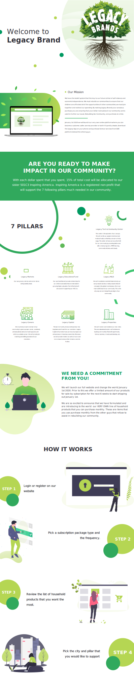

---
# Feel free to add content and custom Front Matter to this file.
# To modify the layout, see https://jekyllrb.com/docs/themes/#overriding-theme-defaults

layout: default
---

<div class="button-container">
    <button id="subscribe-btn" class="btn-hover color-11" onclick="window.location.href = 'login.html';" >REGISTER TO SUBSCRIBE</button>
</div>
